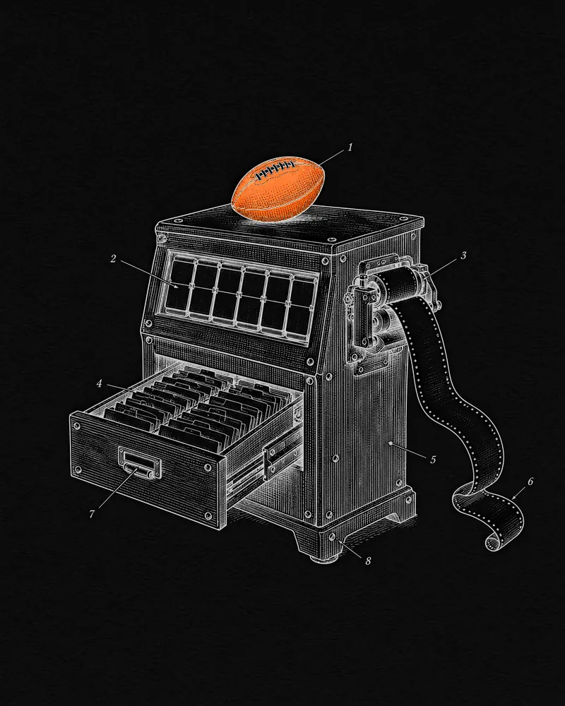

Betcha · 2020 — 2021
Fantasy sports, real money
The back office and back end of a real-money fantasy sports app — from four months before launch to the month Vivid Seats bought it for up to $65M.
- Role
- Enterprise System Engineer
- When
- April 2020 — December 2021
- Company
- New York · acquired by Vivid Seats (NASDAQ: SEAT)
- Built with
- React · Node.js · MongoDB · REST APIs · sports-data feeds

Context
Betcha was a real-money daily fantasy sports app built on player props: pick over or under on individual players, play against the house, and bring up to five friends into a game for bigger payouts. It soft-launched in August 2020 in 20 states and DC, on technology it built entirely in-house — down to its own player-account and compliance system.
I joined in April 2020, four months before launch. Its co-founder and CTO had been FUSION’s CTO while I was there.
The challenge
A small New York team with about $6M raised was launching mid-pandemic into a market led by DraftKings, FanDuel and PrizePicks, under state-by-state rules, and growing mostly through referrals — which piles traffic into the minutes before kick-off. It needed back-office systems to run customers, matches and odds, and a back end that held up at peak slate while staying in sync with live sports data.
What I did
- Built a full CRM platform for the operations team — managing customers, matches and odds in one place.
- Optimised the data flow between the platform and its sports-data providers, so slates and settlement kept pace with live stats.
- Reworked back-end services for high throughput across 250K+ users and their game-day peaks.
- Stayed through Vivid Seats’ acquisition of Betcha in December 2021.
How it works
- 01OnboardSign-up, identity, age and state checks run through Betcha’s own player-account system.
- 02PickPlayers choose over/under props from slates built on live sports-data feeds.
- 03Play togetherEach friend in the same game adds +0.1× to the payout, up to five.
- 04SettleLive stats grade every entry; winners are paid out in cash.
- 05OperateThe CRM runs customers, matches, odds and promotions behind the scenes.
Where the data flows
Outcome
- Up to $65MVivid Seats acquisition — $25M up front plus up to $40M in earn-outs
- 16 mofrom soft launch to acquisition
- 20 + DCstates where it launched with real-money play
- 250K+users on the reworked back end
- 80%of users who joined through referrals or word of mouth
- $2.9Mof developed technology Vivid Seats booked from the deal
Vivid Seats closed the acquisition on 13 December 2021, relaunched the app as Vivid Picks in August 2022, and built its Game Center on the same technology in 2023.
Sources
- Vivid Seats announces acquisition of Betcha SportsVivid Seats · Dec 2021 ↗
- Betcha prioritizes social gaming in new fantasy sports appSports Business Journal · Aug 2020 ↗
- DFS platform Betcha raises $4MSports Business Journal · Jul 2021 ↗
- “100% internally built, owned, and operated technology”PR Newswire · Aug 2021 ↗
- Vivid Seats expands into gaming with $25M Betcha acquisitioniGaming Business · Dec 2021 ↗
- Form 10-K: purchase price allocation and Game CenterVivid Seats · SEC ↗
- Vivid Seats launches the Vivid Picks appVivid Seats · Aug 2022 ↗